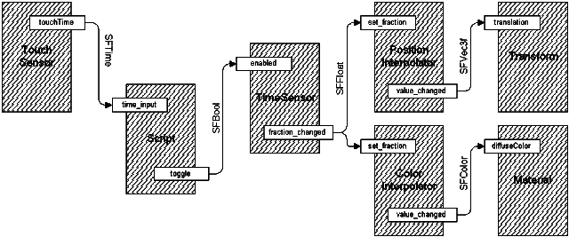

| ¡Más Potencia, Igor! |
Bien. Esta es la continuación de las partes 1 y 2. La primera parte cubrió los elementos esenciales de VRML, para crear mundos VRML de poca complejidad. La segunda parte te enseñó técnicas para hacer tus mundos más realistas, como la aplicación de texturas y los objetos avanzados. Sin embargo, nuestros mundos todavía son rígidos. Esto se acabó de ahora en adelante, ya que vamos a cubrir las técnicas de animación e interacción con el usuario. ¡Si pensabas que lo que habias hecho hasta ahora era bueno, agárrate bien! ¡Esto está a punto de ponerse mucho más excitante!
Este primer capítulo de la tercera parte sólo va a recordarte un par de cosas de lo visto hasta ahora, y a añadir un poco de detalle respecto al esquema básico de la interacción de VRML y el sistema de la animación. Se explicará correctamente más adelante, pero ahora vamos a ponernos en contexto, y a captar una primera idea de como trabaja VRML por dentro en estas cuestiones.
Conectándolo todo
VRML dejó de ser un lenguaje de programación estático. Es algo que cambia, un ser vivo que puede recibir datos y reaccionar con distintas respuestas. Esto requiere un modelo interno de ejecución, para gobernar cómo cambian las cosas y en qué orden lo hacen. Esto se hace conectando los nodos entre sí, proporcionando rutas a traves de las que puedan enviar y recibir mensaje. Estas rutas no se ven, no tienen ninguna representación visible en tus mundos, pero integran los elementos constituyentes del modelo total, permitiendo efectos fantásticos.
Casi todos los nodos poseen eventIns y eventOuts (eventos de entrada y de salida), y muchos tienen exposedFields. Es así como los nodos se comunican con el exterior. Los eventIns son semejantes a receptores que escuchan los mensajes, llamados eventos, del exterior y los toman para procesarlos. Los eventOuts son transmisores que envían los eventos producidos por el nodo al exterior. Los exposedFields son una combinación de ambos. Se comportan como un campo ordinario, y poseen un eventIn llamado set_nombredecampo y un eventOut llamado nombredecampo_changed. En general, las partes set_ y _changed no son necesarias, puedes usar simplemente el nombredecampo del exposedField y en ejecución el navegador sabrá lo que quieres decirle.
Ahora, todo esto es inútil si tus eventOuts van a parar al espacio vacío. No van a ningún lado de esta manera. Necesitas conectar los nodos a traves de ROUTE (rutas). Éstos son como cañerías que encauzan los eventos de un eventOut hacia un eventIn. Puedes conectar muchos eventIns a un eventOut para hacer un efecto causado por muchos eventos distintos. Esto se llama fan-out. Fan-in también se permite, dónde dos o más eventOuts alimentan a un eventIn. Sin embargo, esto es ligeramente peligroso. Si dos eventos llegan a un eventIn con el mismo time stamp (Ahora explicaré esto), los resultados son indefinidos, por lo que si debes usar Fan-in, ten cuidado para evitar esta situación.
Por ejemplo, si tienes dos nodos, un TouchSensor (Luego lo veremos) y un nodo Sound, declarados DEF SENSOR y SONIDO respectivamente, puedes dirigir el eventOut del touchTime del nodo TouchSensor al eventOut startTime del nodo Sound, (por ejemplo para hacer sonar un click al pulsar con el ratón). Usaríamos la siguiente línea de código:
ROUTE SENSOR.touchTime TO SONIDO.startTime
Cuando se pulsa con el ratón sobre el TouchSensor, el sonido se ejecutará. ¡Ajá! ¡Interacción! Como práctica común, todas las declaraciones de ROUTE se agrupan al final del archivo en un grupo aparte. No pueden ir dentro de cualquier nodo, y estos están completamente aparte de las cosas que enrutan. También debes saber que las Route pueden conectar sólo eventos del mismo tipo, por lo que no puedes conectar un SFTime, por ejemplo, a un SFBool. Si necesitas hacer esto, debes hacer un pequeño script que convierta un dato de un tipo a otro determinado.
Generando Eventos
Así, ahora que nosotros podemos dirigir eventos a través de la escena, necesitamos saber un poco más sobre los eventos mismos. Los eventos son mensajes que ligan los elementos de la escena. Todo lo que se mueve o interactúa en VRML lo hace debido a los eventos. Son la clave de todo este asunto. Un evento posee dos partes: el propio mensaje, que es un valor o dato de un cierto tipo, y un time stamp, o estampa de tiempo. El valor del mensaje puede ser de cualquier tipo, por ejemplo SFTime, SFString, MFNode, cualquier cosa, lo que sea. Si los nodos pueden manejarlo, tú puedes enviarlos. La estampa de tiempo es un valor especial sobre el que no tienes ningún control. Es un valor que corresponde al momento preciso en que el evento se produjo, no cuando el evento ocurrió para ser generado por el nodo. Los valores reales no son importantes, sólo cómo se relacionan con otros valores. Un evento con una estampa de tiempo posterior se define como como si ocurriera después de otro con una estampa de tiempo anterior. En general, se procesan los eventos en orden del incremento de la estampa de tiempo. La estampa de tiempo no está disponible al programador, y sólo se usa internamente por el navegador.
Si un evento se genera, y esto causa otro evento en otro nodo, y así continuamente una y otra vez, se dice que se está produciendo una cascada de eventos. Todos los eventos en cascada tendrán el mismo time stamp. Es decir, si el navegador emplea o consulta el time stamp, creerá que todos los eventos se han producido a la vez. Con un fan-in en un eventIn, si dos eventos se reciben con la misma estampa, los resultados son impredecibles. Pueden ser ignorados ambos, o realizarse ambos, o sólo uno de ellos... no hay ninguna manera de saberlo, y variará según el navegador que se emplee. Sin embargo, y afortunadamente, casi la única manera de hacer esto es tener un fan-in dentro de una sola cascada de eventos, para que, con un estudio cuidadoso de la escena, estas situaciones pueden evitarse. Los bucles también pueden ocurrir en cascadas de eventos dónde un evento causa otro, que a su vez, al volver, causa el primero. Esto también debe evitarse en la mayoría de los casos. Sin embargo, si es necesario, puede usarse. El modelo de ejecución permitirá sólo 1 evento con un timestamp particular enviado desde cada eventOut, por lo que si hay un bucle actuando no se ejecutará continuamente, sino sólo una vez. Esto es porque un bucle debe ser parte de una cascada de eventos, y dado que el segundo evento generado por el nodo tendrá la misma estampa de tiempo que el primero, no se enviará. Así que, se permite el uso de bucles, pero probablemente no funcionarán como esperas.
Los eventos iniciales (eventos no causados por otro en una cascada) sólo puede generarse por nodos de tipo sensor y nodos Script. Otros nodos pueden generar eventos sólo si reciben uno. Esto significa que los sensores y Scripts son la llave de la animación y de la interacción en VRML. Los nodos que finalmente llevan a cabo la animación real son los nodos interpoladores y Switch, así como el exposedField en otros nodos. Hasta llegar a ellos hay sensores, Scripts, y cualquier otro elemento que forme parte de una estuctura compleja de animación. El modelo VRML de animación es, de hecho, muy poderoso, y sus posibilidades son prácticamente ilimitadas.
¡Está Vivo!
Así, el modelo de abajo parece bastante complejo. Un TouchSensor
envía un solo evento touchTime (SFTime) a un nodo Script
siempre que se active. El nodo Script convierte el SFTime en
un SFBool y manda el resultado (true o false) al campo enabled del
TimeSensor que comenzará entoces (o detendrá) su marcha.
Mientras el TimeSensor está habilitado (esto es, su campo
enabled devuelve true) genera eventos continuamente para hacer variar el
ciclo ColorInterpolator del diffuseColor de un objeto. Estos
eventos del TimeSensor también llevan un PositionInterpolator
que cambia el campo translation del nodo Transform. ¿ves?
Simple. Es algo como...

Aprenderás más sobre los nodos involucrados más tarde, pero ahora concéntrate en las conexiones y el flujo de datos. Éstos son aquí los elementos esenciales. Ahora sabes conectar los nodos entre sí para hacer comportamientos complejos, y cómo y por qué estos comportamientos se producen. Ahora, vamos a empezar con aspectos prácticos del asunto, empezando con algo de información sobre los sensores medioambientales.